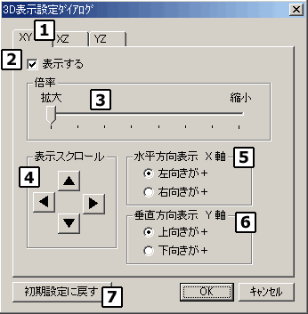

| ３Ｄ表示設定ダイアログ |
|

３Ｄモニターフォームの表示形態を変更します。
変更した内容はすぐに ３Ｄモニターフォームの表示に反映されます。「キャンセル」で終了するとダイアログ表示前の状態に戻ります。
まず、変更したい平面を選択してください。
チェックをはずすと該当の平面が表示されません。また、【３】以降の操作を行うためのコントロールも使用不可になります。
３Ｄ表示を拡大、縮小します。
変更内容はＸＺ表示とＸＹ表示の両方に反映されます。
表示するエリアを上下左右にスクロールします。
表示上の水平方向軸の正向きを変更します。
選択により左右の関係が逆転します（視点が変わります）。見やすい方を選択してください。
表示上の垂直方向軸の正向きを変更します。
選択により上下の関係が逆転します（視点が変わります）。見やすい方を選択してください。
前記の１〜６の設定を初期状態に戻します。
|
|
Copyright (C) 2001 CyVerse
Corp.
|